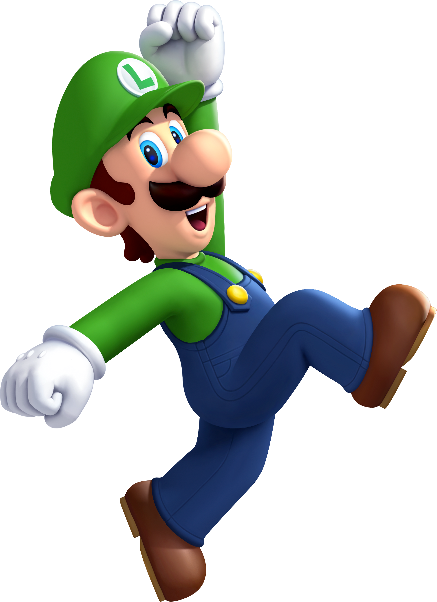

Mario
Mario is ongetwijfeld een van de bekendste videospelpersonages. De kleine dikke loodgieter rent, springt, klimt, vliegt en zwemt zich een weg door allerlei levels met als uiteindelijke doel om Prinses Peach te bevrijden van Bowser.

Luigi
Luigi zal weer aan moeten treden om een zooi koppige geesten te verbannen uit enkele superspookachtige landhuizen in Luigi's Mansion 2 voor Nintendo 3DS. Gewapend met zijn vertrouwde "Poltergust"-stofzuiger voor het vangen van geesten is Mario's broer de aangewezen persoon om deze irritante fantomen te vangen. Natuurlijk, Luigi is snel zenuwachtig en is liever ver verwijderd van deze geesten, maar ook een onwillige held kan ons redden!